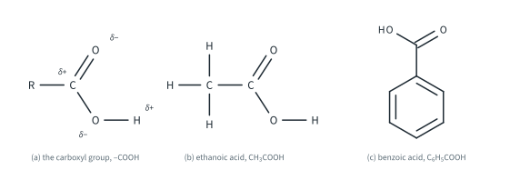
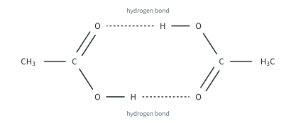
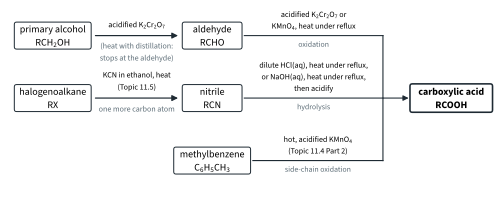
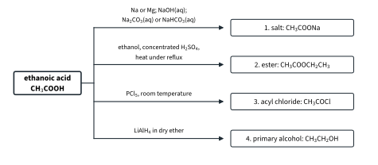
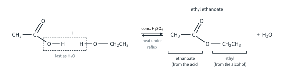
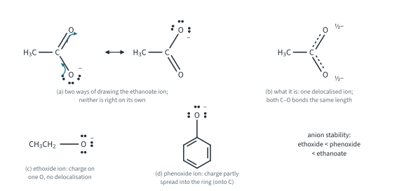
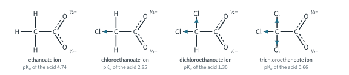
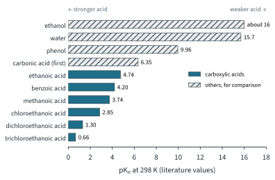

Carboxylic Acids and Derivatives 1
Topic 11.8 · Carboxylic Acids and Derivatives Part 1
On this page
Introduction
Carboxylic acids contain the carboxyl group, –COOH: a C=O group and an –OH group on the same carbon atom. They are the acids of organic chemistry. Vinegar is a dilute solution of ethanoic acid, the sharp taste of sour milk comes from 2-hydroxypropanoic (lactic) acid, and the sting of an ant bite is methanoic acid. The two examples that 9476 names are ethanoic acid, CH3COOH, and benzoic acid, C6H5COOH (Fig 1). They are named with the suffix -oic acid, and the carboxyl carbon is always C1 of the chain (Topic 11.1).1

Replace the –OH of the carboxyl group by something else and you get the derivatives of the acids: acyl chlorides (–COCl) and esters (–COOR′), which are in Part 2, and amides (–CONH2), which are in Topic 11.9. This Part covers how carboxylic acids are made, their four reactions in 9476, and why they are acids at all, which turns out to be the most interesting question of the lot.
Structure and physical properties
The carboxyl carbon is sp2 hybridised, so the C=O carbon and the three atoms around it lie in one plane, at about 120° (as in aldehydes, Topic 11.7). The O–H bond is polar, as in alcohols. But the two groups are not simply an aldehyde and an alcohol side by side: each changes the other, which is why carboxylic acids are much more acidic than alcohols (see “The acidity of carboxylic acids”, below).

Forming carboxylic acids
There are two routes in 9476: oxidation of a primary alcohol or an aldehyde, and hydrolysis of a nitrile. Fig 3 puts them side by side, together with the side-chain oxidation of methylbenzene from Topic 11.4 Part 2.

By oxidation of primary alcohols and aldehydes
You met this in Topic 11.6 Part 1, which covers the oxidation of alcohols in full. A primary alcohol is oxidised first to an aldehyde, and then to a carboxylic acid. To go all the way to the acid, heat the alcohol with an excess of the oxidising agent under reflux:
CH3CH2OH + 2[O] → CH3COOH + H2O (acidified K2Cr2O7, heat under reflux)
CH3CHO + [O] → CH3COOH (acidified K2Cr2O7, heat under reflux)
[O] stands for oxygen from the oxidising agent. With acidified K2Cr2O7 the colour changes from orange to green (Cr2O72− is reduced to Cr3+); acidified KMnO4, heat under reflux, does the same job, and its colour changes from purple to colourless.
Why reflux? Ethanal, the intermediate aldehyde, boils at 20 °C, so on heating it would escape from the flask before it could be oxidised further. Under reflux, the vapour condenses and runs back into the flask, so the aldehyde stays in contact with the oxidising agent until it has all become acid. (If you want the aldehyde, you do the opposite: “acidified K2Cr2O7, heat with distillation”, so that it distils off as soon as it forms. See Topic 11.6 Part 1.)
Benzoic acid can be made the same way, from the primary alcohol phenylmethanol, or by oxidising the side chain of methylbenzene with hot, acidified KMnO4 (Topic 11.4 Part 2):
C6H5CH2OH + 2[O] → C6H5COOH + H2O
C6H5CH3 + 3[O] → C6H5COOH + H2O
Secondary alcohols give ketones and tertiary alcohols are not oxidised, so this route needs a primary alcohol (or an aldehyde). The acid has the same number of carbon atoms as the alcohol it came from.
By hydrolysis of nitriles
Nitriles contain the –C≡N group. When a nitrile is heated under reflux with dilute acid or with aqueous alkali, the C≡N group is hydrolysed: its carbon becomes the carbon of a –COOH group, and its nitrogen ends up as ammonia (or ammonium ions).
With dilute acid, the free carboxylic acid forms directly, and the nitrogen ends up as an ammonium salt:
CH3CN + 2H2O + HCl → CH3COOH + NH4Cl (dilute HCl(aq), heat under reflux)
or, as an ionic equation: CH3CN(aq) + 2H2O(l) + H+(aq) → CH3COOH(aq) + NH4+(aq)
With aqueous alkali, the product is the salt of the acid, and ammonia gas is given off (it has a pungent smell and turns damp red litmus paper blue). To get the free acid, the solution is then acidified with a strong acid such as dilute HCl(aq):
CH3CN + NaOH + H2O → CH3COONa + NH3(g) (NaOH(aq), heat under reflux)
CH3COONa + HCl → CH3COOH + NaCl (then acidify)
Benzonitrile, C6H5CN, gives benzoic acid in the same way: C6H5CN + 2H2O + HCl → C6H5COOH + NH4Cl.
The value of the nitrile route is that nitriles are made from halogenoalkanes and cyanide ions (KCN in ethanol, heat; Topic 11.5). The CN− ion brings in a new carbon atom, so halogenoalkane → nitrile → carboxylic acid adds one carbon atom to the chain. The hydroxynitriles made from aldehydes and HCN (Topic 11.7) hydrolyse the same way, to 2-hydroxy acids:
CH3CH(OH)CN + 2H2O + HCl → CH3CH(OH)COOH + NH4Cl
The product, 2-hydroxypropanoic acid (lactic acid), has a chiral centre. It is formed as a racemic mixture, because the 2-hydroxypropanenitrile it came from was racemic (Topic 11.7; chirality in Topic 11.2).
Worked example 1: adding a carbon atom
Suggest how propanoic acid, CH3CH2COOH, could be made from bromoethane, CH3CH2Br, in two steps. Give the reagents and conditions, and the equation for each step.
(Count the carbons first. Bromoethane has two, propanoic acid has three. Oxidation never adds a carbon, so you need a reaction that makes a new C–C bond: that is the job of the cyanide ion.)
Step 1: KCN in ethanol, heat (nucleophilic substitution, Topic 11.5):
CH3CH2Br + KCN → CH3CH2CN + KBr
Step 2: dilute HCl(aq), heat under reflux (hydrolysis of the nitrile, propanenitrile):
CH3CH2CN + 2H2O + HCl → CH3CH2COOH + NH4Cl
Compare ethanol with acidified K2Cr2O7, heat under reflux: that gives ethanoic acid, with the same two carbon atoms as the ethanol.
Worked example 2: percentage yield
4.60 g of ethanol is heated under reflux with an excess of acidified potassium dichromate(VI). 4.80 g of pure ethanoic acid is obtained. Calculate the percentage yield. (Ar: H 1.0, C 12.0, O 16.0.)
(To find a percentage yield, you have to work out the mass you would get if every ethanol molecule became ethanoic acid: Topic 6 Part 2.)
n(ethanol) = 4.60 / 46.0 = 0.100 mol; 1 mol ethanol gives 1 mol ethanoic acid
theoretical mass of ethanoic acid = 0.100 × 60.0 = 6.00 g
percentage yield = (4.80 / 6.00) × 100 = 80.0 %
Reactions of carboxylic acids
Fig 4 shows the four reactions in 9476, using ethanoic acid. The numbers match the four sub-sections below.

1. Salts: with metals, alkalis and carbonates
Carboxylic acids are weak acids (ethanoic acid is only about 1 % dissociated in a 0.100 mol dm−3 solution; Topic 10 Part 1), but they still show all the typical reactions of an acid. Their salts are named from the acid: ethanoic acid gives sodium ethanoate, benzoic acid gives sodium benzoate.
- With reactive metals, hydrogen is given off (effervescence) and the metal dissolves: 2CH3COOH + Mg → (CH3COO)2Mg + H2(g). The reaction is slower than with hydrochloric acid of the same concentration, because [H+] is much lower in the weak acid. Pure ethanoic acid also reacts with sodium: 2CH3COOH + 2Na → 2CH3COONa + H2(g). (Alcohols and phenol react with sodium too, so this is not a test for an acid.)
- With alkalis, the acid is neutralised: CH3COOH + NaOH → CH3COONa + H2O. There is no visible change, apart from a little warming. Benzoic acid, a white solid, dissolves in NaOH(aq) as it forms sodium benzoate: C6H5COOH + NaOH → C6H5COONa + H2O. Adding dilute HCl(aq) to the cold solution brings the white benzoic acid back out of solution: C6H5COO−(aq) + H+(aq) → C6H5COOH(s). (Topic 10 Part 2 shows how this is used to separate an acid from a mixture.)
- With carbonates and hydrogencarbonates, carbon dioxide is given off (effervescence; the gas turns limewater milky):
2CH3COOH + Na2CO3 → 2CH3COONa + H2O + CO2(g)
CH3COOH + NaHCO3 → CH3COONa + H2O + CO2(g)
The table compares the three kinds of –OH compound (Topic 11.6 Part 2 covers phenol and ethanol in full).
| Reagent | Ethanol | Phenol | Ethanoic acid |
|---|---|---|---|
| Na(s) | effervescence (H2) | effervescence (H2) | effervescence (H2) |
| NaOH(aq) | no reaction | reacts (sodium phenoxide; solid phenol dissolves) | neutralised (no visible change) |
| Na2CO3(aq) or NaHCO3(aq) | no reaction | no effervescence | effervescence (CO2) |
| pH of a 0.100 mol dm−3 solution | about 7 | 5.48 | 2.87 |
Worked example 3: telling them apart
Three bottles have lost their labels. They contain aqueous solutions of ethanol, phenol and ethanoic acid. Describe simple tests to identify each one.
(Look for a reagent that only one of the three reacts with, then deal with the other two.)
- Add NaHCO3(aq) to a sample of each. Only ethanoic acid effervesces; the gas turns limewater milky (CO2).
- Add Br2(aq) (bromine water), which is orange, to the other two. Phenol decolourises it and gives a white precipitate of 2,4,6-tribromophenol (Topic 11.6 Part 2). Ethanol gives no change.
(A pH meter would also work for 0.100 mol dm−3 solutions: ethanoic acid 2.87, phenol 5.48, ethanol about 7. But a chemical test is what the question wants.)
2. Esters: condensation with alcohols
When a carboxylic acid is heated under reflux with an alcohol and a few drops of concentrated sulfuric acid, an ester and water are formed:
CH3COOH + CH3CH2OH ⇌ CH3COOCH2CH3 + H2O (concentrated H2SO4, heat under reflux)
Ethanoic acid and ethanol give ethyl ethanoate, the ester named in 9476. Two molecules join with the loss of a small molecule (water), so this is a condensation reaction (Topic 11.3). Three points:
- Concentrated H2SO4 is a catalyst (it provides H+). Without it, and without heating, the reaction is very slow. Heating under reflux speeds it up without losing the volatile alcohol and ester.
- The reaction is reversible. Starting from 1.00 mol of acid and 1.00 mol of ethanol, the mixture reaches equilibrium with about two-thirds of the acid converted (0.667 mol of ester), Kc = 4.01. The calculation is Topic 9 Part 1, Worked example 2; how the position of equilibrium can be pushed to the right is Topic 9 Part 2.
- Phenols are not esterified this way.3 To make an ester of phenol you need the more reactive acyl chloride (Part 2).
Esters are named from the alcohol part first and the acid part second (Fig 5): the alkyl group of the alcohol (ethyl), then the acid with -oic acid changed to -oate (ethanoate). So CH3COOCH2CH3 is ethyl ethanoate, and methanol with benzoic acid gives methyl benzoate, C6H5COOCH3. Notice that the formula is written acid part first, the opposite of the name.

Many esters have fruity smells and are used in flavourings and perfumes. Ethyl ethanoate smells of pear drops and is a common solvent, for example in glues and nail-varnish remover.
3. Acyl chlorides: with phosphorus pentachloride
Phosphorus pentachloride replaces the –OH of the carboxyl group by –Cl, giving an acyl chloride. The reaction is fast at room temperature, and gives off steamy white fumes of hydrogen chloride:
CH3COOH + PCl5 → CH3COCl + POCl3 + HCl(g) (room temperature, dry)
C6H5COOH + PCl5 → C6H5COCl + POCl3 + HCl(g)
Ethanoic acid gives ethanoyl chloride (named in 9476) and benzoic acid gives benzoyl chloride; the by-product POCl3 is phosphorus oxychloride (phosphoryl chloride). The apparatus must be dry, because PCl5 reacts with water (PCl5 + H2O → POCl3 + 2HCl; Topic 5 Part 2), and so does the acyl chloride (Part 2).4
Alcohols give the same steamy fumes of HCl with PCl5 (Topic 11.6 Part 1), so this is a test for an –OH group, not for –COOH alone.
4. Reduction to primary alcohols
Lithium aluminium hydride, a powerful reducing agent, reduces a carboxylic acid to a primary alcohol. [H] stands for hydrogen from the reducing agent:
CH3COOH + 4[H] → CH3CH2OH + H2O (LiAlH4 in dry ether)
C6H5COOH + 4[H] → C6H5CH2OH + H2O
Ethanoic acid gives ethanol (the 9476 example), and benzoic acid gives phenylmethanol. This is the reverse of the oxidation at the start of this Part: the acid goes straight to the primary alcohol, and the aldehyde in between cannot be isolated. The ether must be dry because LiAlH4 reacts violently with water. Topic 11.7 uses LiAlH4 to reduce aldehydes and ketones.5
The acidity of carboxylic acids
Why carboxylic acids are acidic
In water, a carboxylic acid gives up the proton of its –OH group:
RCOOH(aq) ⇌ RCOO−(aq) + H+(aq)
The anion, RCOO−, is the carboxylate ion (ethanoate, benzoate). Carboxylic acids are weak acids: the position of equilibrium lies well to the left. But they are far more acidic than alcohols. The reason lies in the anion. The more stable the anion (the conjugate base), the further the position of equilibrium lies to the right, and the stronger the acid.
In the ethanoate ion, the negative charge is not stuck on one oxygen atom. A p orbital on the carbon overlaps with p orbitals on both oxygen atoms, and the charge is delocalised over the two electronegative O atoms (Fig 6). Drawing the ion with one C=O and one C–O− (Fig 6a) only tells half the story: the real ion (Fig 6b) has two identical C–O bonds, each between a single and a double bond in length (beyond the syllabus: about 0.126 nm, against about 0.121 nm for C=O and 0.134 nm for C–O in a carboxylic acid; approximate literature values).

Comparing alcohols, phenols and carboxylic acids
The relative acidities of water, phenol and ethanol are explained in Topic 11.6 Part 2. Putting carboxylic acids alongside them (pKa values are literature values; the Data Booklet has no Ka data):
| Compound | pKa | Anion | Where the negative charge is |
|---|---|---|---|
| ethanol, CH3CH2OH | about 16 | ethoxide, CH3CH2O− | on one O, and the electron-donating ethyl group makes it worse |
| water, H2O | 15.76 | hydroxide, OH− | on one O |
| phenol, C6H5OH | 9.96 | phenoxide, C6H5O− | partly delocalised into the ring, but onto C atoms, which are less electronegative than O |
| ethanoic acid, CH3COOH | 4.74 | ethanoate, CH3COO− | delocalised over two O atoms, both electronegative |
Chlorine-substituted ethanoic acids
Replace the H atoms of the CH3 group of ethanoic acid by chlorine, one at a time, and the acid becomes much stronger (literature values, as in Topic 10 Part 1):
| Acid | Formula | Ka / mol dm−3 | pKa |
|---|---|---|---|
| ethanoic acid | CH3COOH | 1.8 × 10−5 | 4.74 |
| chloroethanoic acid | ClCH2COOH | 1.4 × 10−3 | 2.85 |
| dichloroethanoic acid | Cl2CHCOOH | 5.0 × 10−2 | 1.30 |
| trichloroethanoic acid | Cl3CCOOH | 2.2 × 10−1 | 0.66 |
Chlorine is more electronegative than carbon, so it pulls electron density towards itself along the σ bonds: an electron-withdrawing (negative inductive) effect (Topic 11.3). In the chloroethanoate ion this pull is passed along the chain to the –COO− group. It spreads the negative charge further, so the anion is more stable, and the acid gives up its proton more readily. (It also weakens the O–H bond a little in the acid itself.)
Each extra Cl adds to the effect (Fig 7). One Cl makes the acid about 80 times stronger (Ka 1.4 × 10−3 against 1.8 × 10−5); three make it about 12 000 times stronger. Trichloroethanoic acid is a fairly strong acid: about three-quarters dissociated even at 0.100 mol dm−3.


Other groups (Further example). The same ideas explain other differences. Methanoic acid, HCOOH (pKa 3.74), is stronger than ethanoic acid (4.74), because the CH3 group of ethanoic acid is electron-donating: it pushes electron density towards the –COO− group, concentrating the negative charge and destabilising the anion. Benzoic acid (4.20) is also stronger than ethanoic acid; one explanation is that the sp2 ring carbon attached to the –COOH group is more electron-withdrawing than the sp3 carbon of a CH3 group. And the inductive effect dies away quickly with distance along a chain (Tutorial 1, Question 8).
Worked example 4: acid strength and pH
Calculate the pH of 0.100 mol dm−3 solutions of ethanoic acid (Ka 1.8 × 10−5 mol dm−3) and methanoic acid (Ka 1.8 × 10−4 mol dm−3). Explain why the same method should not be used for 0.100 mol dm−3 chloroethanoic acid (Ka 1.4 × 10−3 mol dm−3).
(These are weak monobasic acids, so use [H+] = √(Kac) from Topic 10 Part 1, and then check that less than 5 % of the acid has dissociated.)
ethanoic acid: [H+] = √(1.8 × 10−5 × 0.100) = 1.34 × 10−3 mol dm−3 pH = 2.87
check: (1.34 × 10−3 / 0.100) × 100 = 1.34 %, under 5 %, so the approximation holds
methanoic acid: [H+] = √(1.8 × 10−4 × 0.100) = 4.24 × 10−3 mol dm−3 pH = 2.37
check: 4.24 %, under 5 %, so the approximation holds
For chloroethanoic acid, √(1.4 × 10−3 × 0.100) = 1.18 × 10−2 mol dm−3, which is 11.8 % of the acid. That is well over 5 %, so the assumption that the equilibrium concentration of the acid is still 0.100 mol dm−3 fails, and the answer would be wrong. (Solving it properly needs a quadratic equation, which is beyond the syllabus.)7 The way to compare these acids is by Ka or pKa: chloroethanoic acid, pKa 2.85, is the strongest of the three.
Benzoic acid is a trap of a different kind: 0.100 mol dm−3 benzoic acid cannot be made at 25 °C, because it dissolves only to about 0.028 mol dm−3. Compare it with the others by its pKa, 4.20.
Summary
| Reaction | Reagents and conditions | Equation (from or to ethanoic acid) | Observation |
|---|---|---|---|
| Oxidation of a primary alcohol | acidified K2Cr2O7 (or KMnO4), heat under reflux | CH3CH2OH + 2[O] → CH3COOH + H2O | orange → green (purple → colourless) |
| Hydrolysis of a nitrile (acid) | dilute HCl(aq), heat under reflux | CH3CN + 2H2O + HCl → CH3COOH + NH4Cl | |
| Hydrolysis of a nitrile (alkali) | NaOH(aq), heat under reflux, then acidify | CH3CN + NaOH + H2O → CH3COONa + NH3(g) | NH3 turns damp red litmus blue |
| Salt (metal) | Mg, room temperature | 2CH3COOH + Mg → (CH3COO)2Mg + H2(g) | effervescence |
| Salt (alkali) | NaOH(aq), room temperature | CH3COOH + NaOH → CH3COONa + H2O | no visible change |
| Salt (carbonate) | Na2CO3(aq) or NaHCO3(aq) | CH3COOH + NaHCO3 → CH3COONa + H2O + CO2(g) | effervescence; limewater milky |
| Ester | ethanol, concentrated H2SO4, heat under reflux | CH3COOH + CH3CH2OH ⇌ CH3COOCH2CH3 + H2O | fruity smell |
| Acyl chloride | PCl5, room temperature, dry | CH3COOH + PCl5 → CH3COCl + POCl3 + HCl(g) | steamy white fumes |
| Reduction | LiAlH4 in dry ether | CH3COOH + 4[H] → CH3CH2OH + H2O |
- Acid strength (pKa): ethanol (about 16) < water (15.7) < phenol (9.96) < ethanoic (4.74) < chloro- (2.85) < dichloro- (1.30) < trichloroethanoic acid (0.66).
- Carboxylic acids are acidic because the negative charge of the carboxylate ion is delocalised over two electronegative O atoms. Chlorine atoms make the acid stronger by withdrawing electron density and spreading the charge further (inductive effect); the more Cl atoms, the stronger the acid.
Additional information
- Benzoic acid is an accepted name for C6H5COOH (benzenecarboxylic acid), as phenol is for C6H5OH (Topic 11.1). ↩
- Beyond the syllabus: phenol does react very slightly with the carbonate ion, turning a little CO32− into HCO3−, but no CO2 is released, so there is no effervescence. ↩
- The lone pair on the O atom of phenol is partly delocalised into the ring (Topic 11.6 Part 2), so phenol is a poorer nucleophile than an alcohol, and the equilibrium with a carboxylic acid lies too far to the left to be useful. ↩
- Beyond the syllabus: thionyl chloride, SOCl2, does the same job, CH3COOH + SOCl2 → CH3COCl + SO2 + HCl, and both by-products are gases, which makes the acyl chloride easier to purify. ↩
- Beyond the syllabus: the milder reducing agent NaBH4, and H2 with a Ni catalyst, do not reduce –COOH under ordinary conditions. LiAlH4 does not reduce a C=C bond. ↩
- Beyond the syllabus: the pKa of water comes from Ka = Kw / [H2O], taking [H2O] as 55.5 mol dm−3 in pure water. Treat both 15.7 and the ethanol value (about 16) as approximate. ↩
- Beyond the syllabus: solving x2 / (0.100 − x) = 1.4 × 10−3 gives [H+] = 1.12 × 10−2 mol dm−3 and pH 1.95. ↩